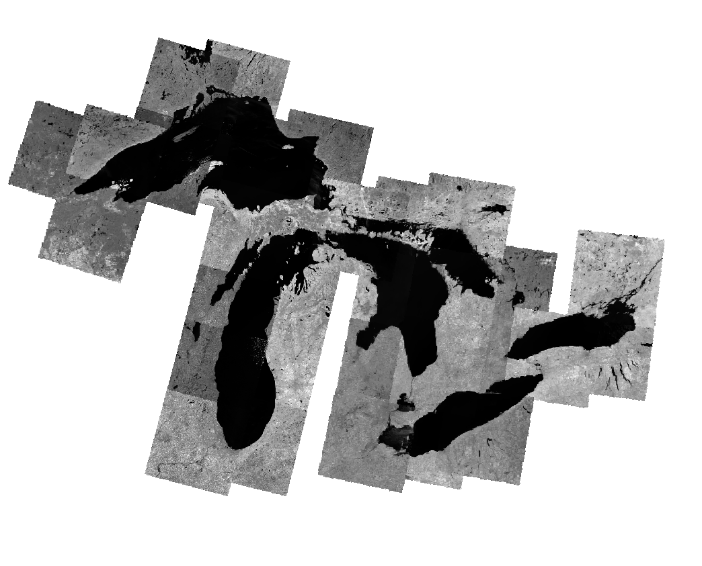

Extracting the Great Lakes from Landsat satellite imagry
For this study we will be using Band 5 of the landsat 8 and 9 dataset which you can download here. Ensure that you download data that has no, or very little cloud coverage i.e. cloud coverage < 1%. Ensure that you download enough data to cover all the lakes fully. You will only need Band 5, which in my case was ~2GB all images. The images you download should have the a name similar to:
LC08_L1TP_016030_20251006_20251115_02_T1_B5.TIF
Note data file name must contain _B5.TIF and start with either LC08 or LC09. If you chose LC08 make sure all files start with LC08. Same if you choose LC09. You will need to make an account to download this data.
You can open the data in to get something that looks like this:
Why Band 5?
Band 5 in the Landsat 8 and 9 represents the near infrared band of the elecrtomagnetic spectrum. Near infrared is strongly absorbed and poorly reflectly by water. This means water will appear very dark in infrared images as you can see in the image above. We can exploit this property to determine there is water in the photo.
Extracting water
We will start by using the indentifying tool and clicking at different spots in the raster photo to find the values. Here we are trying to determine what the cut off is for water and land. On average I get water to be ~6000, with parts of the water going up to ~9000. I found that the darkest parts of land sits a little over 10000. With this knowledge we can create a cutoff for where there is land and where there is water. I will say that anything below 10000 is water, anything above is land, it might be different for you. After we determine a threshold, we can remove anything that isn't water by using a raster calculator. For the purpose of this study we will be using Whitebox Workflow's raster calculator, developed by John Lindsay The command for the raster calculator with a threshold of 10000 can be writen as followed, where "'raster'" can be any word and "[raster]" is the raster image read in from by the program from the command wbe.read_raster():
"raster = wbe.raster_calculator("'raster' < 10000", [raster])"
Note that we are using this raster calculator rather than QGIS built in one as Whitebox Workflows has a Python API that we will be using for this study. Whitebox Workflows keeps calculated rasters in memory, so when we want to use multiple tools it will be faster to do it this way.

Converting to Vector
Now that we have extracted the water, it is time to move convert our rasters to vectors. We do this so that we can combine our data much easier using the Union processing tool. However, Union can be quite a taxing tool on our computer if there are too many polygons, so we start by reducing the number of polygons that would be generated by our rasters by using the Opening tool. This tool works by remove x number of pixels outside the paremeter of all shapes in the raster image, which will remove a lot of smaller shapes while keeing the larger shapes relativly intact. The Opening tool has two values, one for x, one for y. I suggest you keep them the same for this study.
raster = wbe.opening(raster, 40, 40)
Note that for this study I will be using an opening value of 40 since I am on a relativly low end laptop for this study. If you want more accuracy and are running on a higher end computer you can use a lower opening value or skip using opening all together. Just note that Union will take longer with lower opening values
Now we can convert the raster to vector. We can do this using the wbe.raster_to_vector_polygons tool. This takes just one value which is the raster. From this tool you should receive a vector image similar to the following.
vector = wbe.raster_to_vector_polygons(raster)

Creating a script
We can automate the previous commands for all
back